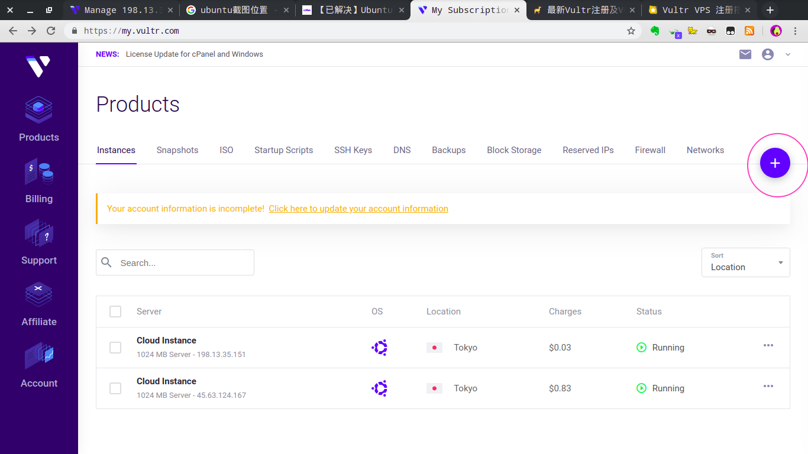
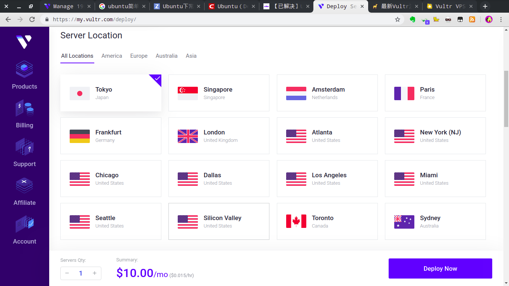
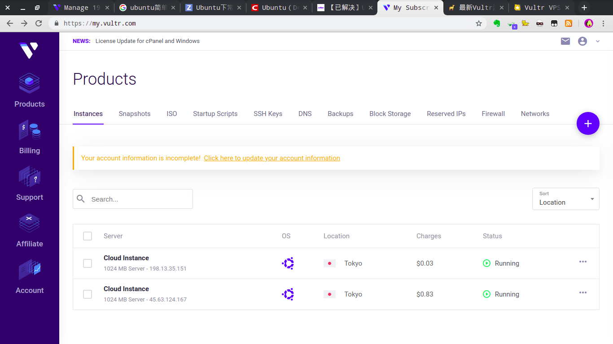
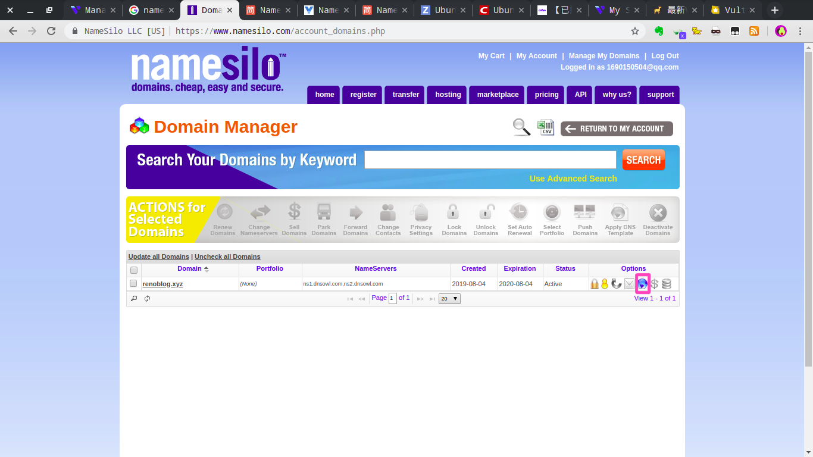
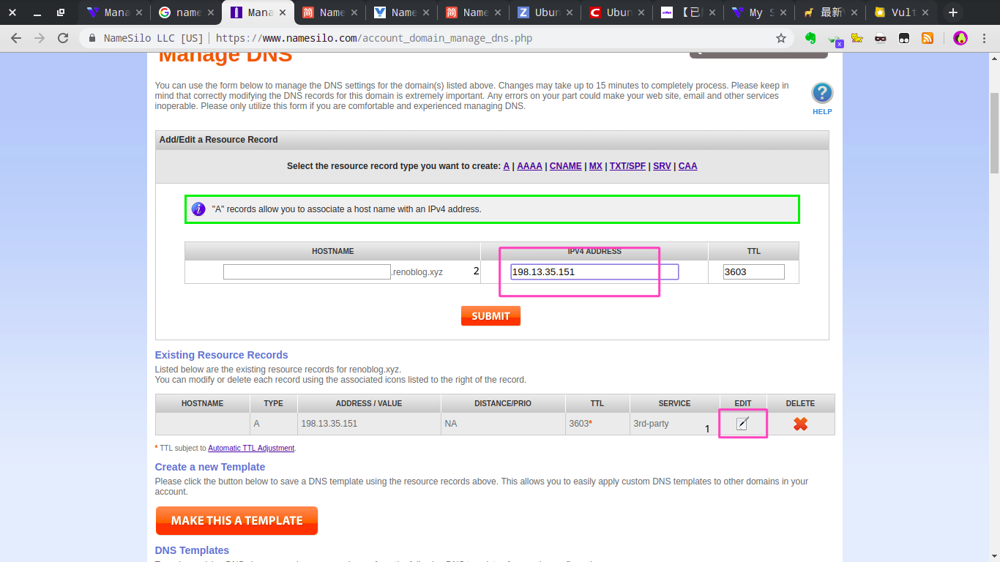
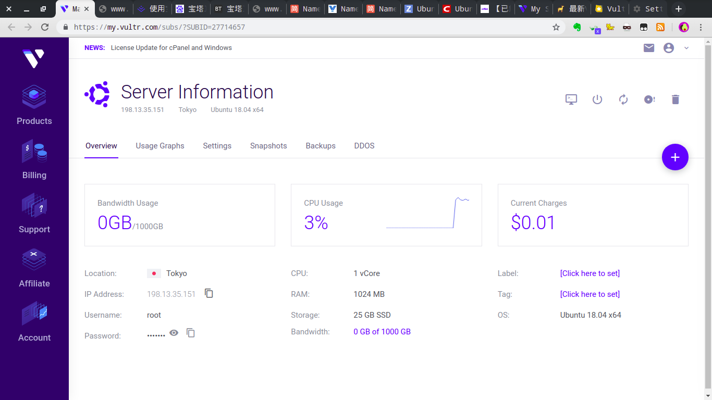
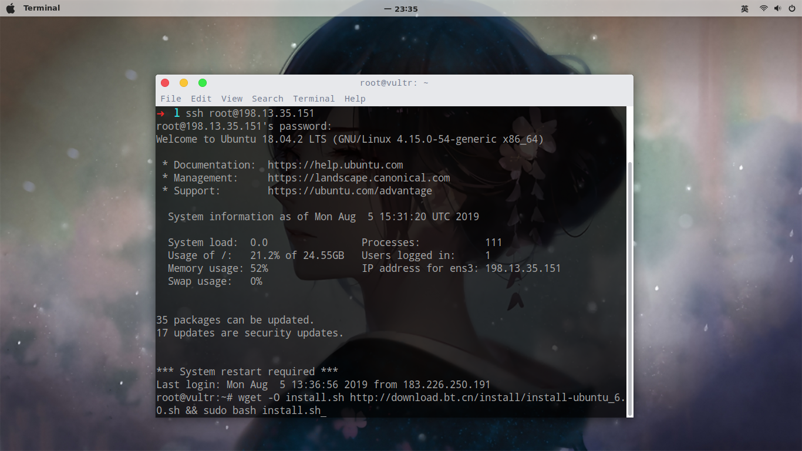
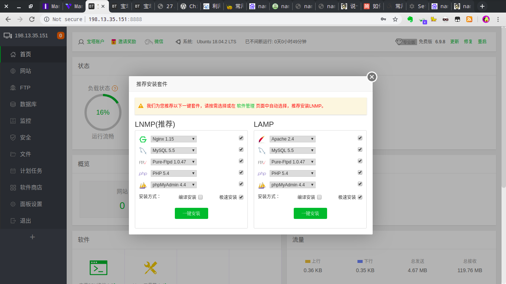
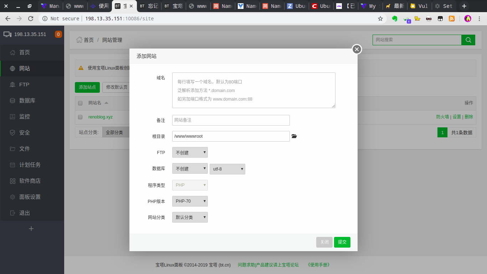
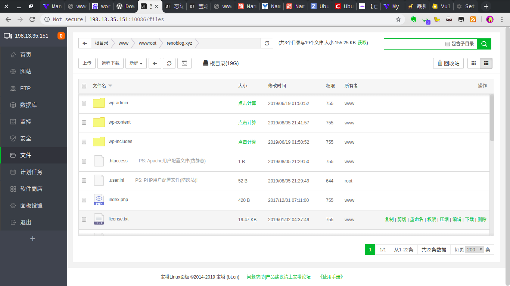

工具使用–很多地方需要翻墙,如果不能可寻求替代方案
- vps - vultr(搭建服务器)
- namesilo(域名注册)
- 宝塔linux
- ubuntu18.04
- wordpress(博客框架-也可以放入自己的代码)
vultr
vultr的另一类用途不解释-社会主义
[vultr注册充值]-网上很多教程
vultr创建服务器
- 点击deploy new server

- 选择server-location(推荐日本节点)

选择server-type(我的是ubuntu18.04)
选择server-size,如果只是小型网站,可以选择$5/月
然后选择Deploy Now
然后进入products,等待一会儿服务器status变为running即可-可以通过ping测试

7.点击进入-查看相关信息
namesilo
购买域名
直接搜索namesilo域名购买与使用教程,网上很多资料
域名解析(重要)
manage my domains->进入如下界面点击如下按钮

点击后会进入如下页面

说明:此处的ipv4 address使用前面vps查看相关信息的ip,因为namesilo域名解析速度有点儿慢,所以最多可能要等几个小时,可以通过ping renoblog.xyz来测试(不能ping通就继续等),直到能ping通为止
宝塔linux
ubuntu一键安装脚本,其他系统也可以在里面找到
wget -O install.sh http://download.bt.cn/install/install-ubuntu_6.0.sh && sudo bash install.sh
如下是vps的详细信息,待会儿会用到

然后进入linux终端(需要sudo)
1
2
3ssh root@198.13.35.151

然后等待安装后能看到url,user,password-因为已经安装过了,所以我只能查找下,可能与第一次安装有所区别,但是没影响
密码找回,如果不小心关了终端,可以ssh进入然后bt default命令
查询url网址,然后输入user,password,会进入如下页面-如果出现运行环境不对,可以在软件商店更换运行环境

安装完成后,点击网站->添加网站

域名填写自己的域名即可,如果是静态网站可以选择不安装
进入网站->根目录,进入如下页面,我使用的wordpress,网站目录就不介绍了,我直接使用的wordpress,导入wordpress并解析所有文件且放入根目录即可通过域名进入

其他安全设置,监控,ftp自行查询
wordpress
下载wordpress模板,如果是自己的网站模板也可以
然后输入域名就可以进入wordpress后台了,接下来的操作都很简单,就不一一介绍了